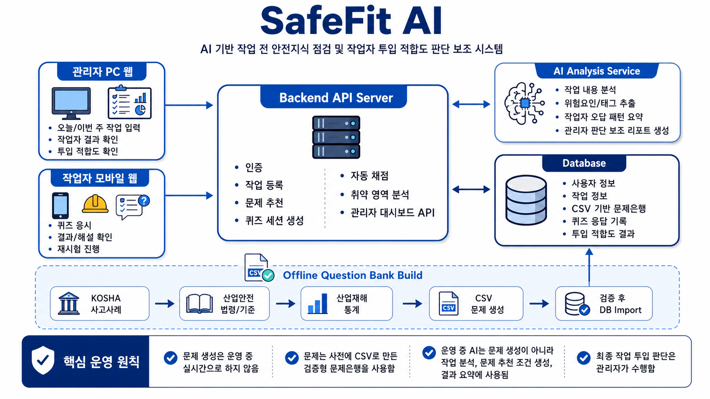

2026 - AI SAFETY SERVICE
SafeFit AI
AI 기반 작업 전 안전지식 점검 및 작업자 투입 적합도 판단 보조 시스템
1산업안전 문제 정의와 서비스 목표
문제 배경
- 작업 전 안전교육이 있어도 작업자별 취약 위험요인과 이해 수준을 파악하기 어려움
- 고소작업, 지게차, 밀폐공간, 전기 작업처럼 치명도가 높은 작업은 투입 전 지식 점검이 중요
- 단순 출석형 교육보다 작업 내용에 맞춘 이해도 확인과 관리자 판단 근거가 필요
서비스 목표
- 관리자가 입력한 작업 내용을 AI가 위험요인, 절차, 법규, 필요한 안전지식으로 분해
- 작업자는 모바일 웹에서 퀴즈를 응시하고 관리자는 PC 대시보드에서 투입 적합도를 확인

2검증형 문제은행과 AI 분석 흐름
핵심 설계
- 운영 중 AI가 즉석으로 문제를 생성하지 않고 사전 검증된 문제은행에서 선별 출제
- KOSHA 사고사례, 산업안전 법령/기준, 산업재해 통계 기반으로 문제은행 구축
- 문항마다 작업 태그, 위험유형, 난이도, 위험도, 평가역량을 연결해 취약점을 분석
AI 적용 방식
- 작업 내용을 절차, 역할, 장비, 사고유형, 위험요인으로 세분화
- 오답 패턴, 고위험 문항 오답, Near-Miss 판단력을 바탕으로 관리자 요약 리포트 생성
핵심 역할
혼자 진행하는 프로젝트로, 문제 정의부터 서비스 구조, AI 분석 로직, 관리자/작업자 화면 흐름까지 전체 기획과 구현을 담당
- 문제은행 기반 출제와 작업자별 취약 태그 분석 로직 설계
- FastAPI 백엔드, PostgreSQL 데이터 구조, AI 분석 요청 흐름 구성
- 최종 투입 판단은 관리자가 수행하고 AI는 근거를 제공하는 보조 구조로 설계
3MVP 기능과 확장 방향
MVP 기능
- 관리자 작업 등록, 문제 추천, 작업자 퀴즈 세션 생성
- 모바일 선택형 퀴즈 응시, 자동 채점, 해설 및 재시험 흐름
- 대시보드에서 점수, 취약 영역, 고위험 오답, 투입 적합도 등급 확인
확장 방향
- 현장별 커스텀 문제, 얼굴인식 본인확인, STT 음성 응답, 교육 시스템 연동
- 법령/통계 데이터 재수집으로 문제은행 갱신 필요 문항 표시
Stack
ReactFastAPIPostgreSQLOpenAI APILangChainLangGraph
Service Flow
- 관리자가 작업 내용을 입력하면 AI가 위험요인과 안전지식을 분석
- 문제은행에서 작업 관련 문항과 취약 영역 보완 문항을 조합
- 작업자가 모바일 퀴즈를 응시하고 관리자가 투입 적합도와 주의점을 확인